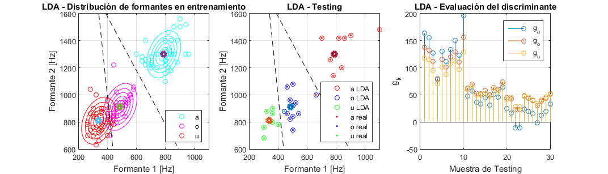
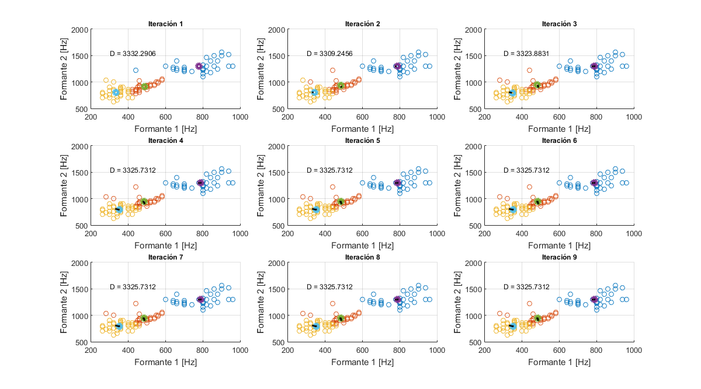
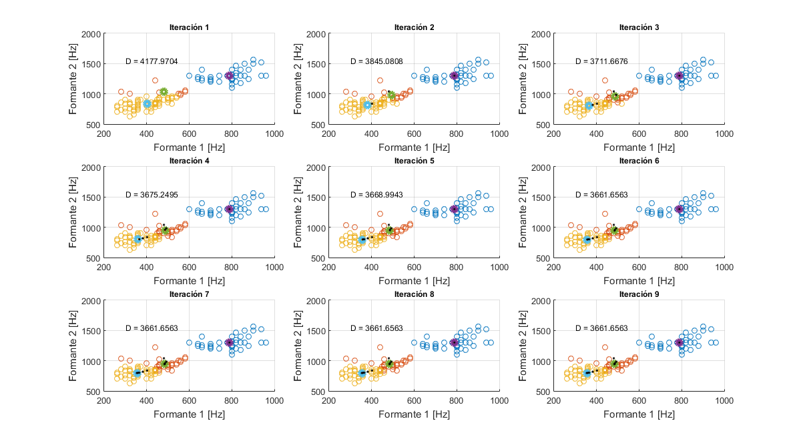
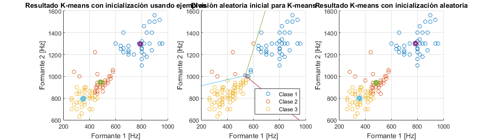
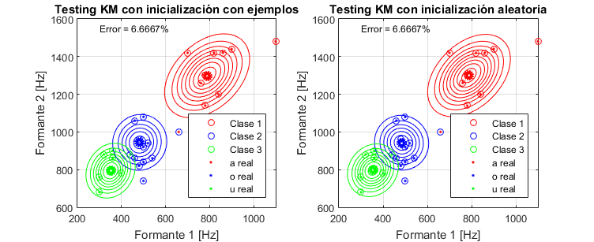
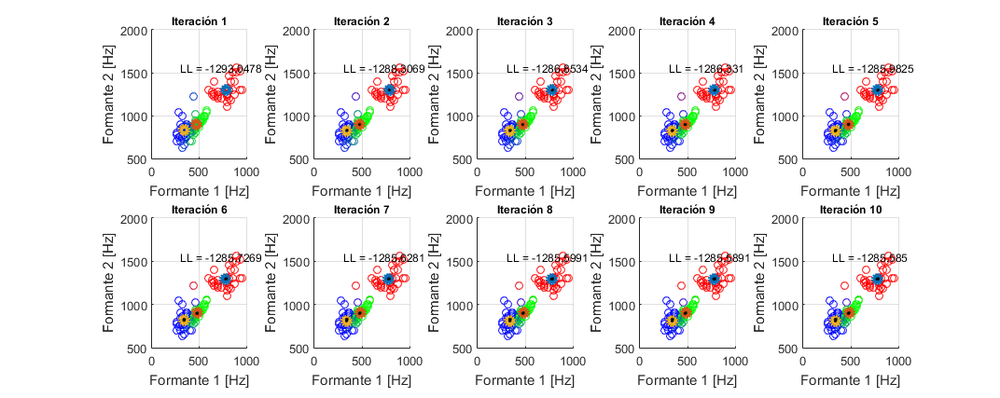
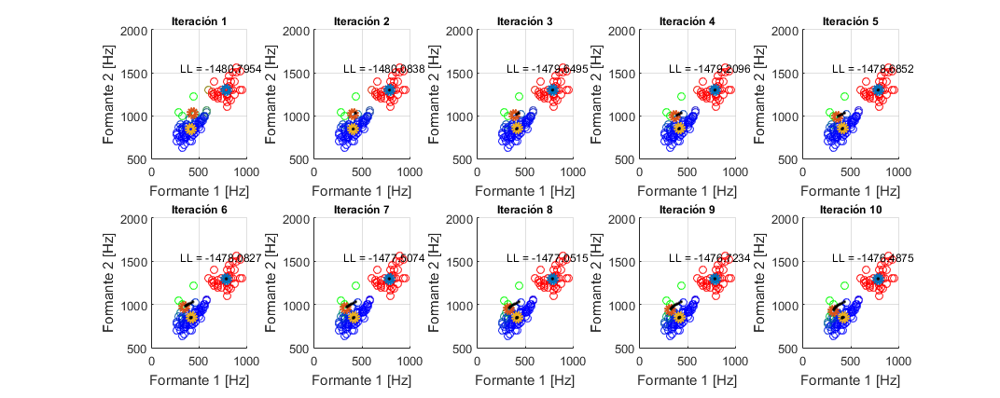
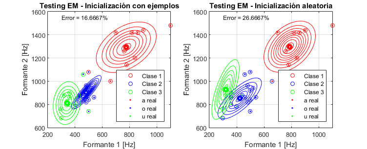

Contents
close all;
Preparo muestras
a_tot = dlmread('./a.txt',' ');
o_tot = dlmread('./o.txt',' ');
u_tot = dlmread('./u.txt',' ');
a = a_tot(1:40,1:2);
o = o_tot(1:40,1:2);
u = u_tot(1:40,1:2);
a_test = a_tot(41:50,1:2);
o_test = o_tot(41:50,1:2);
u_test = u_tot(41:50,1:2);
test = [a_test; o_test; u_test];
LDA - Linear Discriminant Analysis
[mu_a, mu_o, mu_u] = estimar_medias_LDA(a,o,u);
sigma = estimar_sigma_LDA(a,o,u,mu_a,mu_o,mu_u);
[X, Y, Za, Zo, Zu] = calc_curvas_nvl(mu_a, mu_o, mu_u, sigma);
[gA, gO, gU, x1, x2, x3] = calc_discriminante_LDA(a, o ,u, test, mu_a, mu_o, mu_u, sigma);
[A, O, U] = clasificar(test, gA, gO, gU);
ploteo_LDA(a,o,u,mu_a,mu_o,mu_u,X,Y,Za,Zo,Zu,x1,x2,x3,A,O,U,a_test,o_test,u_test,gA,gO,gU);
sigma_LDA = sigma;

K-means - inicialización con ejemplos
K = 3;
indices_aleatorios = randperm(40);
proto_a = a(indices_aleatorios(36:40),:);
proto_o = o(indices_aleatorios(36:40),:);
proto_u = u(indices_aleatorios(36:40),:);
KM = [a(indices_aleatorios(1:35),:); o(indices_aleatorios(1:35),:); u(indices_aleatorios(1:35),:)];
mu_aK = sum(proto_a)/length(proto_a);
mu_oK = sum(proto_o)/length(proto_o);
mu_uK = sum(proto_u)/length(proto_u);
muK = [mu_aK; mu_oK; mu_uK];
[~, muK1, ~, a_KM1, o_KM1, u_KM1] = kmeans_fiubense(KM, muK,'K-Means: Inicialización con ejemplos');
sigma = calc_sigma_kmeans(a_KM1,o_KM1,u_KM1,muK1);
[gA, gO, gU] = calc_discriminante_kmeans(proto_a, proto_o ,proto_u, test, muK1(1,:), muK1(2,:), muK1(3,:), sigma);
[a_KM_test1, o_KM_test1, u_KM_test1] = clasificar(test, gA, gO, gU);
error_bootstrap_KM = calc_error_total(a_test, o_test, u_test, a_KM_test1, o_KM_test1, u_KM_test1);
disp(['Error K-means (Bootstrap) = ',num2str(error_bootstrap_KM),'%'])
[X1, Y1, Za1, Zo1, Zu1] = calc_curvas_nvl_kmeans(muK1(1,:), muK1(2,:), muK1(3,:), sigma);
mu_prototipo = muK;
Error K-means (Bootstrap) = 6.6667%

K-means - inicialización aleatoria
K = 3;
muestras_entrenam = [a; o; u];
media_gral = sum( muestras_entrenam )/length( muestras_entrenam );
phi = calc_angulos(K);
[muK, xF1, xF2] = calc_centroides(phi, K, muestras_entrenam, media_gral);
[~, muK2, ~, a_KM2, o_KM2, u_KM2] = kmeans_fiubense([a; o; u], muK,'K-Means: Inicialización Aleatoria');
sigma = calc_sigma_kmeans(a_KM2,o_KM2,u_KM2,muK2);
[a_KM2, o_KM2, u_KM2, muK2, sigma] = reclasificar(a, o, u, a_KM2, o_KM2, u_KM2, muK2, sigma);
[gA, gO, gU] = calc_discriminante_kmeans(a, o ,u, test, muK2(1,:), muK2(2,:), muK2(3,:), sigma);
[a_KM_test2, o_KM_test2, u_KM_test2] = clasificar(test, gA, gO, gU);
error_aleatorio_KM = calc_error_total(a_test, o_test, u_test, a_KM_test2, o_KM_test2, u_KM_test2);
disp(['Error K-means (Aleatorio) = ',num2str(error_aleatorio_KM),'%'])
[X2, Y2, Za2, Zo2, Zu2] = calc_curvas_nvl_kmeans(muK2(1,:), muK2(2,:), muK2(3,:), sigma);
mu_aleatorio = muK;
Error K-means (Aleatorio) = 6.6667%

Plots K-means
figure('name','Training K-Means','units','normalized','outerposition',[0.1 0.4 0.85 0.5])
subplot(1,3,1)
plotear_resultado_kmeans(a_KM1, o_KM1, u_KM1, muK1)
title('Resultado K-means con inicialización usando ejemplos')
plotear_centroides_iniciales(muK, xF1, xF2, phi, media_gral)
title('División aleatoria inicial para K-means')
subplot(1,3,3)
plotear_resultado_kmeans(a_KM2, o_KM2, u_KM2, muK2)
title('Resultado K-means con inicialización aleatoria')
figure('name','Testing K-Means','units','normalized','outerposition',[0.3 0.4 0.6 0.5])
subplot(1,2,1)
plot_test_KM(a_KM_test1, o_KM_test1, u_KM_test1, a_test, o_test, u_test, muK1, X1, Y1, Za1, Zo1, Zu1)
title('Testing KM con inicialización con ejemplos')
text(300,1550,['Error = ',num2str(error_bootstrap_KM),'%'], 'fontsize', 9)
subplot(1,2,2)
plot_test_KM(a_KM_test2, o_KM_test2, u_KM_test2, a_test, o_test, u_test, muK2, X2, Y2, Za2, Zo2, Zu2)
title('Testing KM con inicialización aleatoria')
text(300,1550,['Error = ',num2str(error_aleatorio_KM),'%'], 'fontsize', 9)
 
EM - Expectation Maximization - Inicialización con ejemplos
K = 3;
data_E = [a(indices_aleatorios(1:35),:); o(indices_aleatorios(1:35),:); u(indices_aleatorios(1:35),:)];
mu = mu_prototipo;
N = length(data_E);
for j=1:K
sigma(:,:,j) = sigma_LDA;
end
p_clase = inicializar_prob_clases(K);
mu_acum(:,:,1) = mu;
figure('name','Training EM','units','normalized','outerposition',[0.1 0.2 0.85 0.65])
for i=1:10
gamma = calc_gamma(K, mu, sigma, p_clase, data_E);
mu = calc_mu(data_E, gamma);
aux = sigma;
sigma = calc_sigma(data_E, gamma, mu);
p_clase = calc_prob_clases(data_E, gamma);
LL = calc_loglikelihood(data_E, mu, sigma, K, N, p_clase);
subplot_EM(i, data_E, gamma, mu, LL, mu_acum)
mu_acum(:,:,i) = mu;
end
[gA, gO, gU] = calc_discriminante_EM(a, o ,u, test, mu(1,:), mu(2,:), mu(3,:), sigma);
[a_clasif1, o_clasif1, u_clasif1] = clasificar(test, gA, gO, gU);
[X1, Y1, Za1, Zo1, Zu1] = calc_curvas_nvl_kmeans(mu(1,:), mu(2,:), mu(3,:), sigma);
error_bootstrap_EM = calc_error_total(a_test, o_test, u_test, a_clasif1, o_clasif1, u_clasif1);
disp(['Error EM (Bootstrap) = ',num2str(error_bootstrap_EM),'%'])
mu1 = mu;
Error EM (Bootstrap) = 16.6667%

EM - Expectation Maximization - Inicialización aleatoria
K = 3;
data_E = [a; o; u];
mu = mu_aleatorio;
N = length(data_E);
for j=1:K
sigma(:,:,j) = sigma_LDA;
end
p_clase = inicializar_prob_clases(K);
figure('name','Training EM','units','normalized','outerposition',[0.1 0.2 0.85 0.65])
for i=1:10
gamma = calc_gamma(K, mu, sigma, p_clase, data_E);
mu = calc_mu(data_E, gamma);
aux = sigma;
sigma = calc_sigma(data_E, gamma, mu);
p_clase = calc_prob_clases(data_E, gamma);
LL = calc_loglikelihood(data_E, mu, sigma, K, N, p_clase);
subplot_EM(i, data_E, gamma, mu, LL, mu_acum)
mu_acum(:,:,i) = mu;
end
[gA, gO, gU] = calc_discriminante_EM(a, o ,u, test, mu(1,:), mu(2,:), mu(3,:), sigma);
[a_clasif2, o_clasif2, u_clasif2] = clasificar(test, gA, gO, gU);
[a_clasif2, o_clasif2, u_clasif2, mu, sigma] = reclasificar(a, o, u, a_clasif2, o_clasif2, u_clasif2, mu, sigma);
[X2, Y2, Za2, Zo2, Zu2] = calc_curvas_nvl_kmeans(mu(1,:), mu(2,:), mu(3,:), sigma);
error_aleatorio_EM = calc_error_total(a_test, o_test, u_test, a_clasif2, o_clasif2, u_clasif2);
disp(['Error EM (Aleatorio) = ',num2str(error_aleatorio_EM),'%'])
mu2 = mu;
Error EM (Aleatorio) = 26.6667%

Plots EM
figure('name','Testing EM','units','normalized','outerposition',[0.3 0.4 0.6 0.5])
subplot(1,2,1)
plot_test_KM(a_clasif1, o_clasif1, u_clasif1, a_test, o_test, u_test, mu1, X1, Y1, Za1, Zo1, Zu1)
title('Testing EM - Inicialización con ejemplos')
text(300,1550,['Error = ',num2str(error_bootstrap_EM),'%'], 'fontsize', 9)
subplot(1,2,2)
plot_test_KM(a_clasif2, o_clasif2, u_clasif2, a_test, o_test, u_test, mu2, X2, Y2, Za2, Zo2, Zu2)
title('Testing EM - Inicialización aleatoria')
text(300,1550,['Error = ',num2str(error_aleatorio_EM),'%'], 'fontsize', 9)
